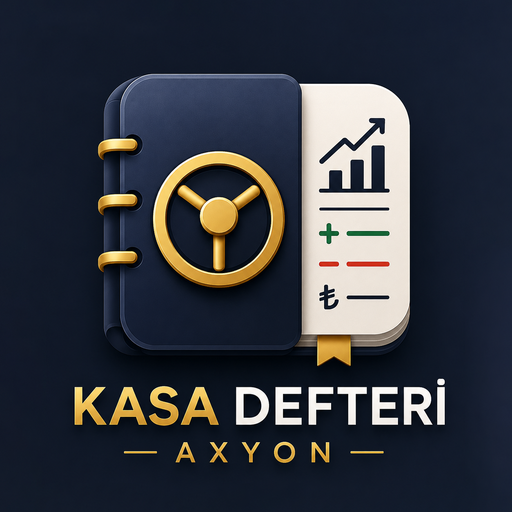

₺
Gelir ve gider
Günlük işlemleri hızlıca kaydedin.
Mobil uygulama · Android
Gelir, gider, cari ve planlı ödemeleri sade bir arayüzde takip edin.

Küçük işletmeler için sade takip
İş kayıtlarını farklı araçlara dağıtmadan yönetin.
Günlük işlemleri hızlıca kaydedin.
Aylık özetleri görün.
Borç-alacak durumunu yönetin.
Yaklaşan ödemeleri takip edin.
Şifreli Drive yedeği oluşturun.
TR, EN ve AR arayüzlerini kullanın.
Ekran görüntüleri

Genel bakış ve kasa hareketleri

Menü, ayarlar ve yedekleme

Gelir, gider ve rapor görünümü

Şifreli yedekleme akışı
Plus erişimi
İlk 14 gün tüm temel yetenekleri kullanın.

Gizlilik ve kontrol
Finans ve cari kayıtlar temel kullanımda cihazda kalır.
Kasa Defteri – Axyon ve diğer AXYON ürünlerini Google Play'de görüntüleyin.